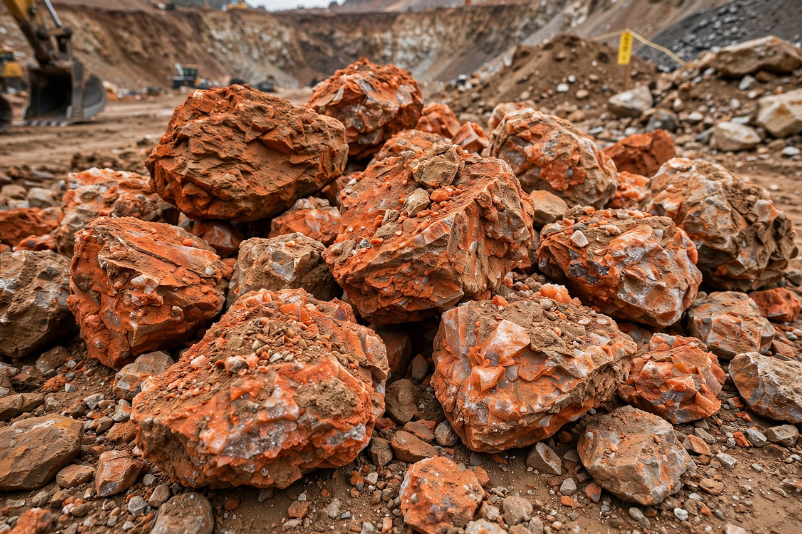

| Potash | |
|---|---|
 Sylvinite potash ore | |
| Principal compounds | Potassium chloride (KCl); potassium carbonate (K2CO3); potassium oxide (K2O, reporting basis) |
| Main ores | Sylvite, carnallite, kainite, langbeinite |
| Major producers | Canada, Russia, Belarus |
| Chief use | Fertilizer (about 90%) |
Potash includes various mined and manufactured salts that contain potassium in water-soluble form. The name derives from "pot ash," referring to plant ashes soaked in water in a pot, the primary means of producing potassium carbonate before the industrial era. In modern usage, potash most often refers to potassium chloride (KCl, also called muriate of potash), the dominant potassium fertilizer; production and prices are conventionally reported in terms of equivalent potassium oxide (K2O).
Wood-ash potash was a major early American and Canadian export, used in soap, glass, and textiles; the first United States patent, issued in 1790, was for an improved method of making potash. From the 1860s, mined deposits at Staßfurt in Germany—evaporite beds of the Zechstein sea—dominated world supply until the First World War spurred development of deposits elsewhere. Enormous reserves were later proven in Saskatchewan, Canada, which today holds the largest share of world production, alongside Russia and Belarus.
Potash ores are evaporite deposits laid down when ancient inland seas dried up. The principal minerals are sylvite (KCl), carnallite, kainite, and langbeinite, typically interbedded with halite and anhydrite. Beds a few metres thick may lie hundreds of metres underground; they are worked by conventional underground mining or by solution mining, in which hot water or brine dissolves the salts and is pumped to the surface for crystallization.
Roughly 90 percent of potash goes into fertilizers, potassium being one of the three primary plant nutrients (with nitrogen and phosphorus) and essential to crop yields and quality. The remainder serves chemical manufacture—potassium hydroxide, glass, soaps, detergents, and pharmaceuticals.